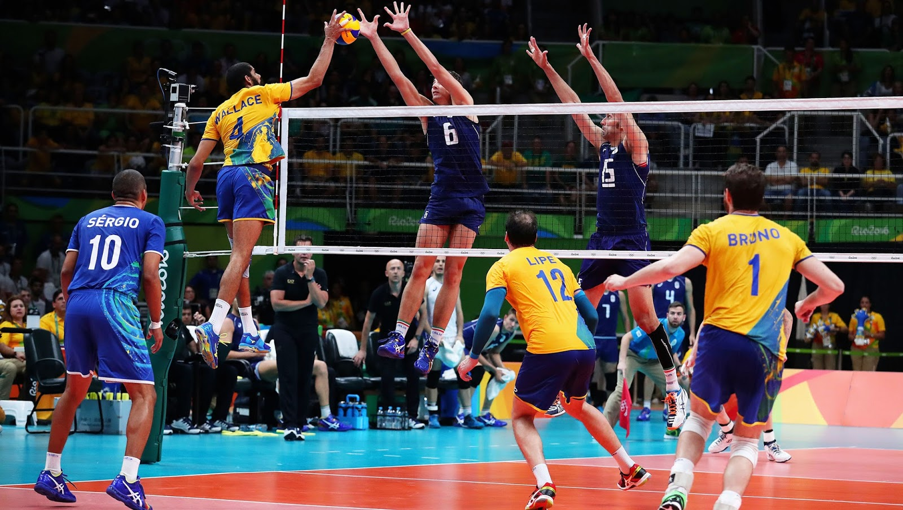

Bienvenue sur mon blog de Volley-Ball
Vous découvrirez ici des informations passionnantes sur l'histoire, les règles et les techniques de ce sport d'équipe dynamique.
Histoire du Volley-Ball
Le volley-ball a été inventé en 1895 par William G. Morgan, un éducateur physique de la Young Men's Christian Association (YMCA) à Holyoke, dans le Massachusetts, aux États-Unis. Morgan souhaitait créer une activité physique adaptée aux adultes, moins intense et plus accessible que le basketball, inventé quelques années plus tôt par son collègue James Naismith. Inspiré par plusieurs sports comme le tennis et le basketball, il a développé un jeu initialement appelé « Mintonette ». Celui-ci se jouait avec une balle légère au-dessus d’un filet. Le nom a ensuite été changé en « volley-ball » pour refléter l’action principale du jeu : faire passer la balle d’un camp à l’autre. Ce sport, simple et flexible, s’est rapidement popularisé, jusqu’à devenir une discipline olympique en 1964, et reste aujourd’hui pratiqué par des millions de personnes à travers le monde.
Techniques de jeu essentielles
-
Service : Le point de départ de chaque action.
Le service est l'action qui lance chaque point. Il s'agit de mettre le ballon en jeu en le frappant depuis la ligne de fond du terrain. Un bon service peut mettre l'équipe adverse en difficulté, soit par sa puissance, soit par sa précision. Il existe différents types de services : le service flottant (sans effet), le service smashé (puissant), et le service jump (avec saut). Le service est la première opportunité de prendre l'avantage dans le rallye.
-
Réception : Contrôle du ballon pour lancer l'attaque.
La réception est la première touche de balle après le service adverse. Son objectif est de contrôler le ballon pour permettre à l'équipe de construire une attaque. Une réception précise est essentielle pour éviter les erreurs et donner au passeur la possibilité de bien orienter le jeu. Les joueurs utilisent souvent la manchette (passe avant-bras) pour assurer une réception stable et précise.
-
Passe : Orientation du jeu vers l'attaquant.
La passe est l'action qui suit la réception et qui oriente le jeu vers l'attaquant. Le passeur, souvent considéré comme le cerveau de l'équipe, doit être précis et rapide pour mettre l'attaquant dans les meilleures conditions. Une bonne passe permet de varier les angles d'attaque et de surprendre la défense adverse. La passe peut être haute, rapide, courte ou longue, selon la stratégie de l'équipe.
-
Attaque : Frappe du ballon pour marquer.
L'attaque est l'action offensive qui vise à marquer le point. Elle consiste à frapper le ballon avec force et précision pour le faire atterrir dans le camp adverse. Les attaquants utilisent des techniques comme le smash, le coup placé ou le lob pour déjouer le bloc et la défense. Une attaque réussie dépend de la qualité de la passe, du timing du saut et de la lecture du jeu adverse.
-
Contre : Défense au filet pour bloquer les attaques.
Le contre est l'action défensive au filet qui vise à bloquer l'attaque adverse. Les joueurs sautent et tendent les bras pour intercepter le ballon avant qu'il ne traverse le filet. Un bon contre peut non seulement stopper l'attaque, mais aussi rediriger le ballon vers le camp adverse pour marquer directement. Le contre demande une excellente coordination, un bon timing et une lecture rapide des intentions de l'attaquant.